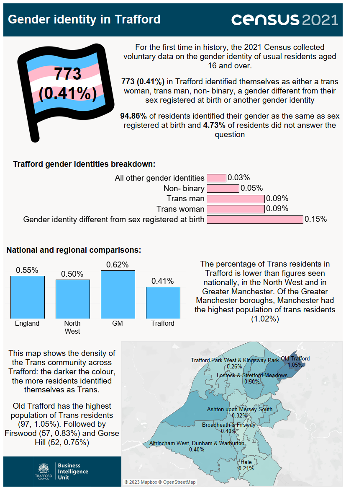

Source: Office for National Statistics.

Infographic containing statistics relating to gender identity released on from the census taken on Sunday 21 March 2021. For the first time in history, the 2021 census collected voluntary data on the gender identity of usual residents aged 16 and over. 773 (0.41%) in Trafford identified themselves as either a trans woman, trans man, non-binary, a gender different from their sex registered at birth or another gender identity. 94.86% of residents identified their gender as the same as sex registered at birth and 4.73% of residents did not answer the question. The breakdown of the other responses were as follows: All other gender identities (0.03%), non-binary (0.05%), trans man (0.09%), trans woman (0.09%) and gender identity different from sex registered at birth (0.15%). The percentage of Trans residents in Trafford (0.41%) is lower than figures seen nationally (0.55%), in the North West (0.50%), and in Greater Manchester (0.62%). Of the Greater Manchester boroughs, Manchester had the highest population of trans residents (1.02%). Within Trafford's Middle-layer Super Output Areas, Old Trafford has the highest population of Trans residents (97, 1.05%), followed by Firswood (57, 0.83%) and Gorse Hill (52, 0.75%).